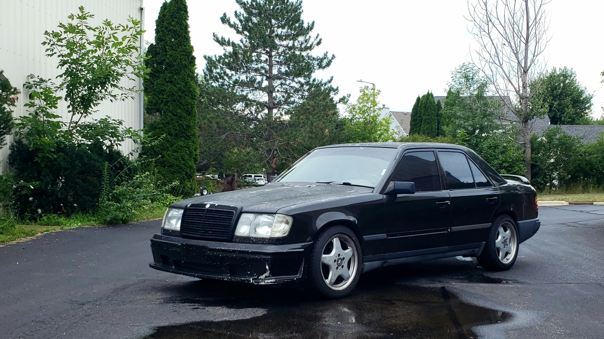
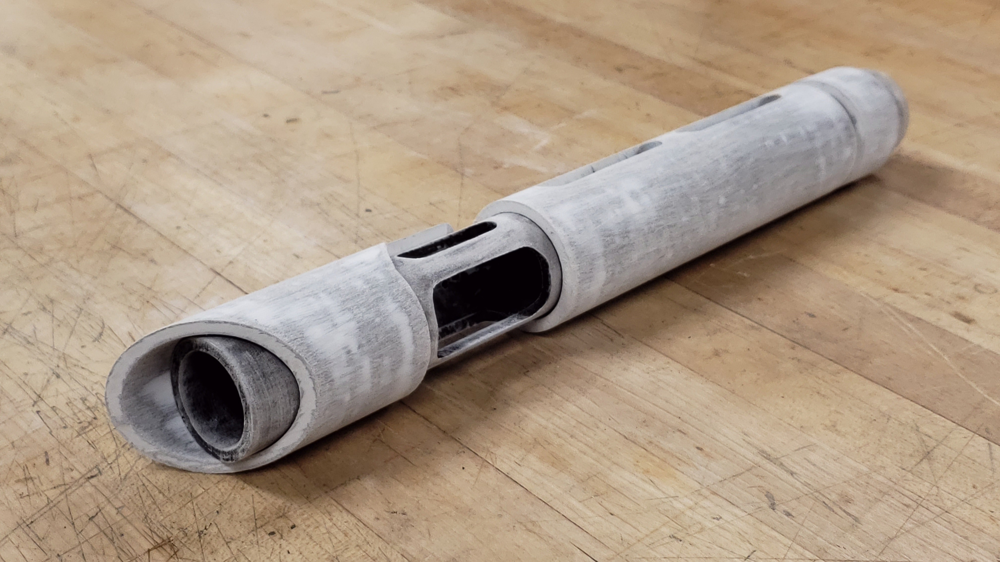
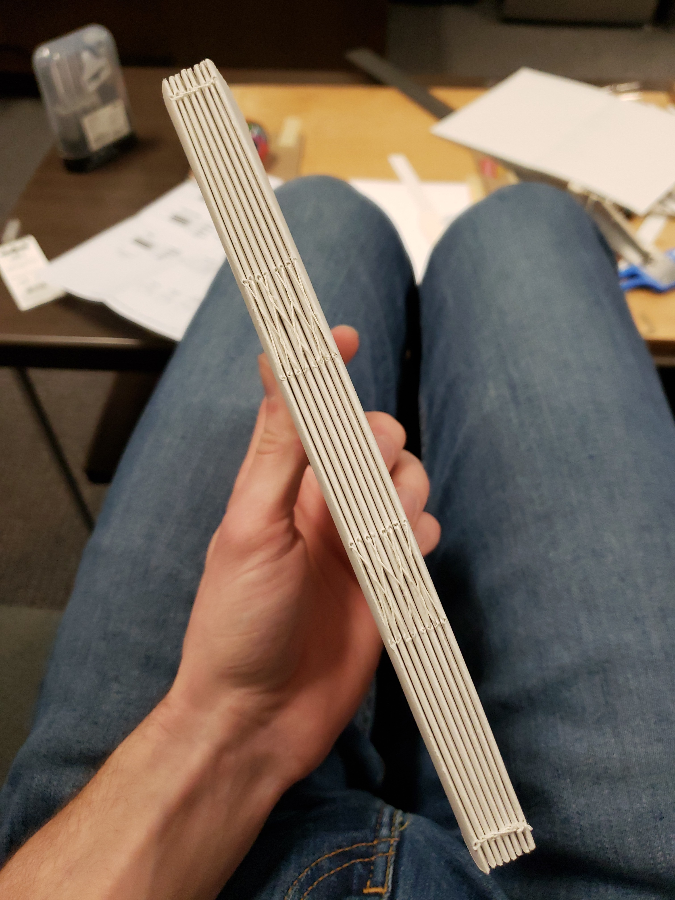
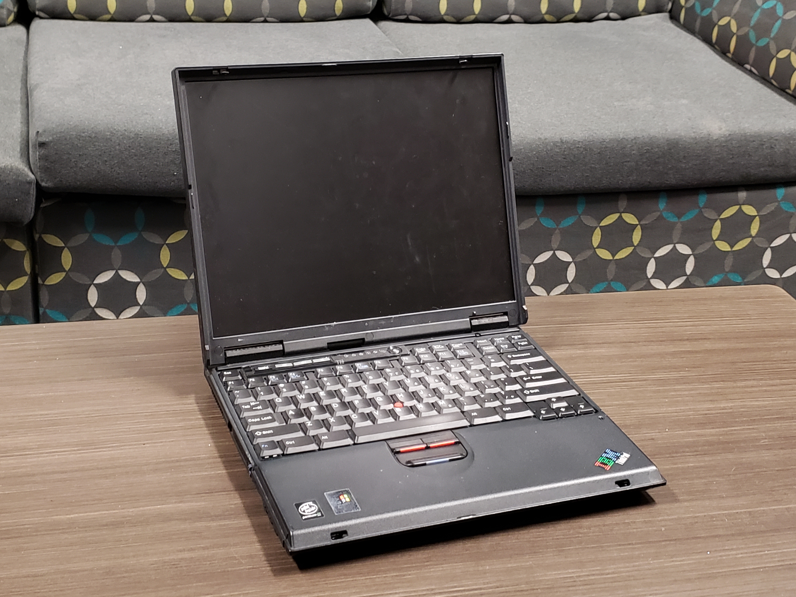
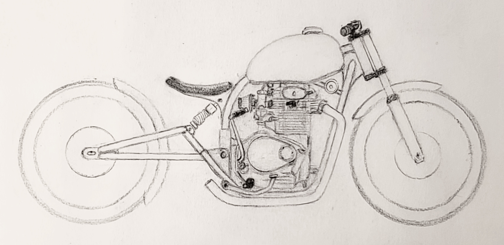

Today was actually a good day to pay attention in class, but at the same time, I just needed to draw. I haven't really done much lately due to me having to work on my digital models and renders for class.
Posted: 2022-12-07
Ebay Store and 300E - Update 3
Ebay Store
I've finally started selling some of the stuff around my room that's been collecting dust. Some items sold already, so it's pretty bare, but there should be plenty of listings in the future: a.scerba eBay Store
300E - Update 3
This has been a journey... I took the car in to a shop to repair the structural unibody damage, and after sitting for a month they finally "fixed" it. Except that they didn't. Instead of removing the subframe and reinforcing the area, they just welded the crack, which did nothing. The car handles in the same dangerous way as before. The weld even opened back up on one side... On top of that, there are no windshields on the market for W124s currently (tbf, the car is 34 years old), so I can't have Safelite install a new piece of glass as I had hoped.
In regards to the subframe, I'll probably wait until next summer, buy a TIG welder, and do the repair myself. I am extremely disapointed and my lack of faith in shops for repair has only decreased. I'm sure there are good one's out there, but I don't see myself going to a shop unless I know the quality of their previous work through someone else. Even for the big stuff, I'd rather do it myself and have an 80% repair where I know what to expect vs a 20-50% repair where I pay too much money and have the expectation that it was actually fully repaired.
For the windshield, I've found a couple donor cars north of Milwaukee, so I'll be venturing out there for a used piece of glass. I'll need to find a shop to install it, but for a quoted $95 for grade A used glass, I'm willing to take the risk as new would be in the hundreds.
I'll leave with a picture of the car outside of my friend's warehouse:

300E Outside Friend's Place
Posted: 2022-08-20
Recent Sketch Practice
I need to keep up with sketching this summer and these are some of my pages from the last couple weeks.
Pen Sketches
Sportbike side view.Sportbike rear perspective view.Van rear view.Unfinished bike design.XS650 rough side view.Car.Doodle Page 1Doodle Page 2Doodle Page 3Doodle Page 4Doodle Page 5Doodle Page 6Truck.
Logo
While sketching, I made this shape. I was trying to make something that look fast based off of a leaf. I think I may clean it up and use it as a logo for something.
Logo idea.
Messing With Watercolor
One thing that I've wanted to try since the end of the semester was watercolor as a substitute for marker, so I attempted a few watercolor sketches. They're not great, but I definitely think I have a better handle on some of the ideas now.
Motorcycle rear view.Motorcycle side view (not fantastic).Landscape sketch.
I'll post back when I have some more. Hopefully the watercolor will improve by then.
Posted: 2022-05-28
Laptop Resale
I've decided to finally be rid of some of my computers. There are just way too many to justify anymore (20 in the ThinkPad collection alone), and I really need the money. A family photo will be taken before I start selling. I'm going to be sad to see them go. When the eBay store page is set up, I'll post a link here for anyone interested. I'll also be selling other random items from around my house, like my printer, so definitely take a look.
Posted: 2022-05-24
Recent Viscom 1 Work
I lost sleep last night over this drawing, so I wanted to post it. This was our second to last project in our viscom class, and I chose to render a Dodge Stealth R/T.
Dodge Stealth R/T Exploded View.
This was a quick sketch of a lowered 60s Cadillac Calais I did in class. The proportions are off, but I'm still relatively happy with how it came out, especially compared to some of the other work I've done recently.
Marker sketch based on a lowered 60s Cadillac Calais.
I hope to have some more stuff like this to post in the future. I need to start doing it more.
Posted: 2022-04-20
Mercedes-Benz 300E - Update 2
This poor car. I come home for a couple days and take the car out, and I notice the exahust seems a bit louder than I remember. For sure more raspy. I don't think too much about it, but I also keep hearing a clanking. After taking a look under the car where I suspect the noise is coming from, I see this:
Broken exhaust.
It's an easy fix, for sure, but it's another reminder of the poor condition this thing is in. Hopefully I can get it sorted this summer.
My friend Angel took a few pictures of the car while we were out and about. Here are a couple:
300E in front of Comus Lake.The photographer, Angel Castaneda.
I'm very much looking forward to this summer and getting this thing fixed, among other things.
Posted: 2022-04-18
Learning Photoshop Basics
One of my classes this semester is Digital Techniques, an intro course to Adobe Illustrator and Photoshop. These are a couple of recent assignments.
In this assignment, we learned the basics of image touch up for archival photos. Basically, photographing an art piece and reducing as many imperfections as possible to best represent what the piece should actually look like. In my case, I took the lightsaber image from a previous post and edited that.
My discussion post response detailing the work done:
For this assignment I used a few curve and hue/saturation layers to touch up the image. First, I used a curves layer with a gradient mask to try and even the lighting across the piece. Over that was another curves layer to set the white balance. The last curves layer was used to blacken the background, and a mask was used to exclude the prop. Finally, a hue/saturation layer was used with a mask to add more color to the crystal, as it faded over the years.
Before.After.
In an assignment before that, we were tasked with creating a digital painting of an object or scene. I chose to do a first generation Pontiac Fiero because it was on my mind at the time.
I started with an overlay sketch of an image I found online. It was done freehand with a small Wacom Intuous S. Clearly not my best work, but it got the job done.
Overlay sketch.
After that, I used the pen tool to create paths/boundaries so that I could quickly block in the shapes. The wheels were done using custom brushes as stamps because I didn't have the time or energy to paint them out. Custom brushes were a requirement for the assignment anyways, so it worked out.
This is the finished piece:
Final product.
My big takeaway from this project is the fact that I really need a pen display. Not being able to look at what you're drawing or turn the display is quite annoying. Unfortunately, they're fairly expensive, but I will absolutely be looking into it for next school year due to the increase in digital assignments.
Posted: 2022-04-12
Quinceañera Picture
Angel and I in front of my motorcycle at his sister's Quinceañera
Old pic from last summer that a friend recently sent to me. Definitely miss riding.
Posted: 2022-02-19
Milwaukee Art Museum Picture
Milwaukee Art Museum
I was going through the files in the site and came across this image I took in April of last year, so I thought I'd post it.
Posted: 2022-02-14
Staying on Track - Summer 2022
I'm posting this because I haven't posted anything in a while but also to try to keep myself on track for this summer. The plan is to fix and sell a good portion of the motorcycles that are in the garage.
The big one is my Sportster, my first bike. When I got it, I hadn't planned on liking it. It's just a dumb Harley, right? But I've since come to appreciate the quirks and enjoy riding it. I think it's soon time to move on, though, so the plan is to fix the slight knock and sell it next summer, or sell it as is this spring.
Next up is the Ruckus. This shouldn't be too big of a deal. I had also picked this up with the intention of selling. The plan is to finish the GY6 swap, get it cleaned up, and parade it around some of the local scooter events to hopefully sell. If not, it'll probably come to school with me next year and I'll hopefully sell it there or back home next spring.
I also need to take care of the XS650. The plan for that has gone from show bike to something driveable and alright looking pretty quickly. I really have my eyes set on a CB750, so getting the XS650 engine rebuilt and the bike assembled and sold is a high priority now. I'm still planning on taking care to not have it look horrible, but any dreams of reaching the quality of the inspiration photos are out the window at this point.
Lastly, there's a 1985 Yamaha Razz that has some issues staying running that I hope to fix this summer and sell.
As mentioned in the Mercedes update post, the plan is to get the rear welded up, head gasket replaced, fuel lines checked, and windshield replaced. Looking into the electronics and cabin fan is also something I should do.
Once all of that is done, I'm going to take a look at the engine in the SL350. It's absolutely a long shot, and probably won't happen by the end of the summer, but if it can be fixed for under $500, I may consider going through with the SL build mentioned in the SL 350 project post.
I definitely have my work cut out for me, but I should be able to get it done if I work at it hard.
Posted: 2022-02-05
Lightsaber - Update 1: First Sand
Got the lightsaber sanded down today with 150 grit sandpaper and started cleaning up some asymmetry in the model. I wanted to do a color change and decided that the white portions will be painted to look like lightly weathered bone. I'll be experimenting with panting techniques to try to get it as realistic as I can. I'll post back with my experiments.

First sand on the lightsaber.
Posted: 2022-01-16
Custom Lightsaber Prop
I made this prop many years ago, and I want to make it better. The cuts are choppy, there's some asymmetry, and the electronics have a lot to be desired. The end cap needs some help as well.
Front.Side.Crystal chamber.
For the short term, I'd like to clean up the manufacturing imprerfections and try to make the crystal less foggy. From there I'll work out the electronics, add some more detail, and do some finish painting. I might make a cool stand if I feel there's time. Overall, just another random side project I figured I'd post about.
Old Process Photos I Found:
Trying to use a drill press as a mill.DIY flashlight assembly to light up crystal.Finished PVC housing assembly.Light off.Light on.Light demo.Finished with paint.Light demo with paint.Light demo with paint. Side view.
Posted: 2022-01-11
Mercedes-Benz 300E - Update 1
300E at the Milwaukee Art Museum.
This has been an adventure.
Since the first post featuring the car, it has gotten to the point where it runs and drives. There are some big problems that need addressing, however. I noticed some rear-stearing while driving. It turns out that there's a large crack due to rust running through the rear subframe mount point, letting the driver-side rear wheel to move around a bit. This is the single most important issue to get fixed if I want to be safely driving it anywhere.
There has also been a fair amount of coolant blow-out. It needs topping off every week-and-a-half or so. I haven't looked much into this, but some random online posts mentioning bad headgaskets. This was with a truck, but I could imagine it might be similar in this case. The thermostat for the cooling system, as well as many hoses, have been replaced, and the coolant system was flushed, so I'm not sure what else it would be. I need to do more research as previously stated, though.
The climate control fan is also acting up. It was behaving normally for a while, but it's since started doing strange things. It can take up to an hour for the fan to actually start spinning. The temperature dial seems to no longer do anything, and it's stuck on max heat. It also seems that when the air is set to the main vents, air only comes out strongly on the left driver-side vent, so something's probably up with the redirection mechanism somewhere.
Also, while sitting, a tree fell and hit the windshield, so there's now are large cracks and a heavily shattered point on the windshield, so that must be replaced.
Other upcoming work includes properly adapting the hose to the fuel pump (as there is a section of tube being used as a filler that cannot handle gasoline), replacing the rubber hose from the fuel pump to the main line, and new shocks (again) for the rear (the current ones are too soft).
Basically, I have a lot of work to do.
Posted: 2022-01-10
Bookbinding - Part 3
It has been much too long since the last post. This is just a quick post showing off the final product. It came out nicely minus the other issues previously mentioned. I've since been using it for sketching and random notes.
Finished book.
Posted: 2022-01-09
New Year Update
Happy New Year!
It's been a while since the last post. Since then, I've picked up some stuff. Namely an IBM ThinkPad 755CX, an IBM Model M SSK, and an Apple Mac Pro tower case. The ThinkPad needs an outdated power cord, so that needs to be tracked down for a reasonable price before it gets turned on. I opened it up, and no batteries leaked, so that was a happy surprise. Hopefully it just boots up.
ThinkPad 755CX closed.ThinkPad 755CX open.
The SSK was a cool find, but unfortunately the top case is severely warped, making some of the edge keys unpressable, and the bottom two rows of modifier keys don't work likely due to corrosion. In the moving process back to my house, I shattered the left shift key by running it over on accident... Luckily those are only $5. The whole board needs a rebuild, however, which won't be that cheap.
Model M SSK (pre-accident) above my full-size Model M.
The Mac case was purchased for the X58 build. A case mod in one of those is something I had hoped to do for a while, and cases that have enough ventilation are relatively expensive, so this kills two birds with one stone. All of the GPU blocks arrived for the build, so I just need to order the other watercooling parts. I won't be able to purchase those for a while, unfortunately, as it's going to cost a bit more than I would like at the moment.
Day two of the bookbinding saga. I took a look at the finished set of pages this morning, and they turned out nicely. I noticed that the second to last signature was a little narrower than the rest, but it isn't the end of the world. For the cover, I went and purchased Davey board from the campus bookstore.It was a much more reasonable thickness for the size of book I was making and was much cheaper than what I found at the other store (surprisingly), so it worked out.
Signatures after drying overnight.
Before assembling the cover, however, I needed to add the endpapers and reinforce the spine. Since I didn't have any decorative papers, I just used the same sketch paper used in the regular pages. I just cut them to size and glued the portion near the spine to the main pages.
Reinforcing the spine was a bit of a fail on the first attempt. The video I saw showed glue being applied to the mousseline before being applied to the spine. A roller was used, but I just had a brush, so I tried to use that, but the cloth ended up folding in on itself and became tangled, so I threw it away. What ended up working was applying the glue directly to the book and then adding the cloth on top. I then dabbed some more glue on top of the fabric for more strength. At this stage, one would normally add the headbands, but I didn't have any, so I skipped that step.
Spine reinforced with mousseline and endpapers applied.
With that out of the way, it was time to make the cover. I didn't have any dimensions to go off of, and I didn't bother doing any research (big mistake), so I just made the front and back 1/8" larger on all sides (1/4" total) and the spine about the thickness of the paper plus the two covers. I then glued them to the cover material with a 1/4" gap between the pieces and a 1/2" border around the whole assembly. This ended badly. When I test fit the paper in the cover, I noticed that the cover was way too wide for the insert. The spine was also a bit large and was a bit awkward considering the overall thickness. It wasn't enough to be a huge problem, but the overhang on the covers was, so I cut back enough material to have an even perimeter when the book was closed. This ended up being about a 1/4" strip. Since the cover was already glued, it was difficult to cut away the board. I ended up poking the knife through the cover material on accident a couple times. Luckily it wasn't too bad.
Davey board laid out on the cover material. The right side is in progress of being cut down to the correct size.
I then cut the corners at a 45 degree angle to allow the edges to fold over. I cut one a bit too close, and when folding the edges the board shows through a bit at that corner. A bit of glue made it to the visible portions as well which was a bit unfortunate. I'll definitely take more care next time.
Finished cover.Cover and bound signatures all done.
The last step was to glue the book to the cover. This was a relatively simple process. Line up the pages inside the cover, coat the cover with glue, then clamp the cover onto the top page. Flip over and repeat. I then clamped the book using my usual method. In the morning it should be a finished book.
Final clamp under a portable light table and some old laptops.
Thoughts
This was probably one of my favorite random projects that I've done yet. I definitely plan on making a few more as gifts and for personal use. This first attempt taught me a lot about the process, and I learned some useful information for the next attempt. One, if making a hard cover, cut it the same width as the signatures, but add 1/4" to the overall height. Also make the spine width the thickness of just the pages (maybe plus one cover, but not two). Two, definitely don't cut close to the corners when making the cover, the cardboard will show badly. Lastly, make sure to be careful when cutting the signatures and endpapers to be sure they are all the same size.
I'll post back tomorrow with more pictures of the final book.
Posted: 2021-11-30
Bookbinding
Yet another project... I'm learning bookbinding. To preface, I rediscovered my small leather journal and immediately realized why I stopped using it. The cover, while satisfying to hold, is too floppy and can't be used to hold down the pages while writing. There are only four signatures, but they are very thick with many pages. This coupled with the fact that It's bound directly to the leather back makes it difficult to skim pages, as the signatures tend to stay clumped together. Lastly, the signatures themselves have horrible QC and vary in width by upwards of 1/8". I had also just watched a prop video on Tested where Adam Savage showcased his hand made grail diary from Indiana Jones and the Last Crucade. He mentioned bookbinding and how the process connected him more to the book. With all of this in mind, I set out to see how hard the process was.
After a second of Googling, I opened up the top result and found a bunch of good information as well as a few videos. The process seemed relatively simple. Fold pages in half, collect into signatures, cut the signatures to size, puncture holes in the spine of each signature, sew the signatures, then glue the spine. Then you just reinforce the spine with some cloth and attach the cover. The cover varies depending on the style of book that you want. There are binding variations as well, but I haven't researched that much to know the ins and outs of which to use. I decided that instead of rebinding my leather journal I would first make a complete book from scratch. This way I wouldn't be out another journal if something went wrong.
Armed with my beginner knowledge, I went and purchased some of the basic materials: Needle and cord, paper, bone folder, PVA/white glue, brush (for the glue), mousseline (for spine reinforcement), and cover material. A few notable omissions, cover board, endpapers, and headbands, were either too expensive or nonexistent at the store I had access to. For the cover board, I plan to laminate thin cardboard to make a strong piece. The endpapers will just be regular paper instead of something decorative, and I'll figure something out for the headbands. An awl is also needed, but I just used the point of my compass. It seemed to work well. For clamps, I used whatever heavy objects I had lying around, namely old laptops.
Signatures for the book/journal. Eight twelve-page (three sheets of paper) signatures waiting to be cut to final size.Three of the eight signatures bound. Going well so far.

All eight signatures bound and tied. Ready for gluing.Book/journal clamped under my laptop with the first application of glue.
I've also began laminating the cardboard for the cover and spine. I only had enough carboard for two layers for the spine and one side of the cover, so I need to find more cereal boxes.
That's it for now. I'll post more progress tomorrow once the first coat of glue on the spine is dried.
Update: While writing this, I checked on the cardboard. The clamping force on it is not nearly enough to keep it from curling and warping, so I'm just going to buy the correct material.
Posted: 2021-11-29
New ThinkPads
In the fight to open my 90s era digital car documentation, I gave up trying to use a VM and bought a couple laptops from the Windows 2000 and XP era. Of course, they were ThinkPads because any excuse to buy one is good enough for me. Specifically, they are T22 and T43 models. The T22 was from the full IBM era, so I am pretty excited about that. So far, I've put Lubuntu on the T43 but haven't been able to boot to an OS on the T22 because I need CD installation media (not DVD unfortunately). I have blank CDs at home, though, so I'll grab them over Thanksgiving break and make a Windows 2000 install disk. I've never used anything older than XP (on the Microsoft side), so it should be interesting. I can't imagine it will be too different, though. It has a GUI after all. I'll post some pictures in the next few days. I've actually had these for two weeks now, but I haven't had time to make a post.
Pictures:
ThinkPad T43

ThinkPad T22
Edit: Added pictures
Posted: 2021-11-16 Edited: 2022-01-09
The Stranger - Albert Camus
I was recomended this book a couple days ago, and I've finished reading it today. This isn't a review but just a thought I had after reading.
This book has made me think more about the way I live my life than anything else I've come across. The main character is an existentialist lacking a fair amount of social skills and much care about anything. As someone who is somewhere mentally between a "normal" person and this character, reading about his interactions forced me to see those parts of myself exagerated and had me thinking about and questioning the way I think. I don't belive that I'll be lead to the same situation as the character, being locked in a cell and awaiting death with a small chance of hope, but there are some interesting parallels that I have been considering.
I would definitely read this book for yourself, as I'm not really qualified for literary analysis, and it is quite short. Digitally, it's a little over one hundred pages, and I was able to read it while partially distracted over the course of about four hours while also being a relatively slow reader.
Posted: 2021-10-17 Edited: 2021-10-18
Completed Blender Level 2 Tutorial
Finished up the Level 2 portion of the Blender Guru beginner tutorial series. Here's my progress so far:
Modeling preview.First application of texture using nodes.Texture experimentation gone wrong.Final texture.
The spiked mess was made in the progess of messing with nodes. I thought it was funny, so I included it. I think the icing needs a bit more work, as it looks a bit fake next to the more realistic texture of the donut. I'll hopefully be moving on to Level 3 in the next couple days.
Posted: 2021-10-13
Back to Blender
After a long period away from the open source 3D modeling software, I've finally gone back to learning Blender. With the help of Blender Guru's updated donut tutorial, I have started learning the latest version.
I had originally followed his first beginner tutorials and had come up with the following:
My previous renders from last tutorial:
Progress check render w/o sprinkles.Messing with emmission.Early sprinkle application.Final rendering.
Looking back, I definitely needed to work more on the frosting and adding more light. The scene is a bit too dark in the first set, and a bit better in the last image.
Currently, I've made it through Level 1 of the updated beginner series.
Current renders based on updated tutorial:
Progress check 1.Progress check 2.
Taking a second look, the modeling work could have used a bit more finesse, and the lighting is maybe a bit bright in some areas, but I think it is a much better attempt than the original set. Since the original renders, I've become more accustomed to using 3D software, so I was a bit more comfortable navigating around now than previously.
More progress renders will be posted as I complete each level in the series.
Posted: 2021-10-12 Edited: 2022-01-10
This Site on Netscape
While in the process of trying to read an overengineered digital car manual from the 90s, Netscape came up as a possible way to view it. I've only heard of Netscape in tales of a distant past. A place where horrible ads were everywhere (wait, that's still the case) and dial-up was the way to connect. Regardless, I thought it would be interesting to see how it would fair rendering this webpage that was built with modern web browsers in mind using the newer HTML standards. Not to my surprise, it was completely broken, comically so. Some CSS rules still applied, but a majority of the page rendered as if there was no stylesheet.
That's all I have. I would dive into why it's broken the way it is, but I'm not that interested at the moment. Just wanted to share. Try it out for yourself if you're interested. Versions of Netscape (I used 9) are still readily available online in old archives.
Posted: 2021-10-09
"Decompress" Sketch
Just wanted to share one of the pieces I did leading up to a school project. I liked the font, and it kind of reminded me a bit of a house sticker set. Feel free to send your thoughts on the piece, good or bad.
One of six concept pieces for a school project.
Posted: 2021-10-04
"New" Car
In the last month of summer leading up to school, I purchased a new car. Unfortunately, I was unable to bring it with due to not having the title in time and a couple other unfinished maintenance tasks. I hope to have it with me by the end of October. It's a 1986 Mercedes-Benz 300E with a 4-speed automatic, unfortunately, but it is rear-wheel drive, so that makes up for it a bit.
My 1986 Mercedes-Benz 300E at original owner's shop with flat tires.
Since that picture has been taken, I've replaced the rear shocks that were bad, put new tires and valve stems on, and got it to a running state. There were several other small tasks that were also done, but the last things that need addressing are a coolant flush and new belts and new hoses. The A/C needs troubleshooting as well, but we're heading into winter, so that's a project for the spring.
Once I get it, and as I complete other maintenance and mods, I'll post about it here.
Posted: 2021-10-02
Site Update (Oct 2021)
I've finally gotten the site to a good stopping point. For anyone who sees this page, feel free to send an email with any noticed bugs or other suggestions for the site.
Contrary to the initial mission of the site, I've moved on to using some Javascript. The site does function without it (albeit clunkily and redundantly) but it helps significantly with mobile and desktop navigation. The move came from my work on another webpage, angel-castaneda.com. There I plan to use EJS templates and a database to allow for a more scalable blog with posts on their own separate pages. Honestly, at this point I should just use a website builder, but where's the fun in that? I had originally envisioned using PHP here on my site, but I think that for the scale that I'm running at and the number of active pages that I have no server-side scripting should be needed. Maybe in several years if I grow this page significantly I will reconsider.
Other News
The "electronics review" page is still a consideration, but will definitely be a far off endeavor.
Since the start of writing class at school, I've definitely regained my interest in writing. I plan to update my other pages with some better text written like a normal person writes (at least that's the plan. I could mess that up again).
Detroit has been good so far. The train is conviniently across the street, so going home is fairly straightforward. Two-thirds of my classes are drawing based, and the other two are writing and model making, so I am enjoying myself. The work load is on par with what I had experienced last year at MSOE, but some say it's a bit high. Because there are two campuses, I'm able to get a decent bicycle ride in most days that I travel between campuses which is a change from walking only a block.
I'll probably check back in more regularly with updates, but until then happy Fall!
Posted: 2021-10-01
Site Maintenance
Notice: The site is currently undergoing maintenance and will likely be live while parts of the site are still broken. It should be back to normal by next week with improvements.
Posted: 2021-09-24
New Networking Hardware
Picked up a 50 port POE switch and two Dell dual 10Gb network cards from a swap meet. The network cards are both Dell model Y40PH cards. The switch is a Cisco SG200-50P and will be a good upgrade to my existing consumer switch. The addition of POE will let me run cool IOT stuff or just experiment with it.
Some pictures from my first time in Detroit for a campus tour:
Apple advertisement.Windsor skyline.Old house.Other old house.Michigan Labor Legacy Monument."The Fist" monument to Joe Louis.
Posted: 2021-08-02
Acceptance Status Update
I meant to post this much earlier, but I have been accepted to CCS for the fall term. I'm actually on the way to Detroit to check out the campus as I write this post.
I'm pretty excited for the upcoming term and look forward to meeting new people there.
Posted: 2021-08-01
Vixen 21TD Motor Home
Saw this cool, old Vixen motor home while driving around today. This is the first time that I have heard of the brand or seen one of their vehicles.
Vixen 21TD motor home.
Posted: 2021-07-27
Changing Direction
Over the last month, I have come to the realization that computer science and software development are not for me. Programming as a hobby and homelab tinkering are still fun and a good challenge, but working as a developer maintaining crazy code bases or not being able to fix the old, horrible mistakes made in the previous server deployment as a sysadmin has become unapealing. Instead, I plan to pursue transportation and automotive design. I am much happier drawing, using CAD, and learning about digital art, so changing to an art school should allow me to pursue those skills while letting me to keep comupters as a hobby. Product design in general is something I enjoy and vehicles specifically are probably my favorite objects to work with, so a major in transportation design with a focus on autos makes the most sense at the moment to me.
Currently, I am applying to the College for Creative Studies (CCS) in Detroit, Michigan and will keep my acceptance status up to date here.
Posted: 2021-05-10 Edited: 2021-08-01
Sydney's Birthday!
I'd like to say happy birthday to my sister, Sydney! She's been an amazing sister and friend over the years. Although we don't agree on everything under the sun, we still try to be close with one another. Happy birthday!
Sydney blowing out candles on her birthday cake.Sydney riding the dirtbike.
Posted: 2021-04-27
SL 350 Project
I've been into designing motorcycles recently and have gained a bit more appreciation for "bobber" and "chopper" motorcycles.
There is a badly rusted Honda SL 350 with a seized engine at my house that I want to do something with. I figure it would be a decent "large-scale" project because the bike can't get much worse than it already is if something goes wrong.
In the concept sketch, I have the rear chopped and replaced by a custom swing arm with a mono shock, and the seat and bike are lowered a few inches. The wheels, frame, front steering and suspension, and the fuel tank are all stock. The handle bars might come from the XS project because I want a modern dirt bike bar on that instead, and they are just a straight bar with a slight pull-back.

Honda SL 350 bobber concept.
This will be the project after the XS build, so it probably won't get started until next year.
Honda SL 350 in current condition.
Posted: 2021-04-26 Edited: 2021-07-29
Non-PSA PSA About Best Buy Seagate Drives
TLDR: Seagate ST2000DMA08 drives contain/are the same as ST2000MD008 drives.
There may be a site that has already covered this topic, but I couldn't find it during my search, so I figured that I would post about it here.
So, I'm currently building up a NAS/remote storage system, and I needed some relatively inexpensive CMR drives to install in my server. I ended up finding these Seagate St2000DMA08 drives on BestBuy.com. That particular model number was not on this list of known SMR drives from TrueNAS, so I took a gamble and bought them. When I did, I neglected to check the numbers on the box. The box model was ST2000DMA08, but there was a "contains" label that showed that there was an ST2000DM008 drive inside which was on the list of SMR drives. I understand that there are business benefits from making a new model number for a retail store, but it would be nice if Best Buy disclosed this information on their product post. Looking back, the only place that there is a reference to the ST2000DM008 model number is in a picture from a user review.
I ended up returning them and swapping for these WD Purple WD20PURZ drives because they were the only 2TB CMR drives under $70 that I could find on Amazon or Best Buy (I have some gift cards). Hopefully they work well enough for bulk storage over the network. I'll post more about the installation as the parts come in.
Posted: 2021-04-12
Getting Back Into Watercolor
After about 7 years since my last watercolor project, I am trying to get back into painting in watercolor. I found a technique online for making deciduous trees, and these are my two practice attempts. The rightmost result is one that I am prouder of, but I still need a lot of work. Prepping the paper is also a skill I need to work on, as the warped paper made painting more difficult.
Deciduous summer tree practice watercolor.
Posted: 2021-01-18
New Year Update
Happy New Year!!! (a bit late, I know)
Quick Site Update:
Mobile view has been improved to the point that I am happy. Some things, like the in-page navigation links, still need addressing, but I have a site-overhaul in mind, so I will not be fixing that on this current site iteration.
New site plans include the addition of client-side JavaScript and a new page layout that takes advantage of the added functionality. Server-side scripting will eventually happen, but I want to get client-side done first, as it has a more noticeable impact on the reader.
My computer reviews page is also on hold for the time being. School work and the new site overhaul are taking up most of my time at the moment, but I will have something posted in regard to that by the end of the month.
Posted: 2021-01-12
Computer Reviews
I am starting a computer/electronics thoughts page. My goal is to share my short and long-term experience with various products and hopefully help someone with a purchase decision. At the very least, the overviews could be useful as another archive of tech products as time goes on.
My first post will be on my main laptop, a Lenovo ThinkPad T460s from 2016. It has served me well, and since I have had the most time with it recently, I figure it will make a good starting point.
Posted: 2020-11-29
Pumpkin Carving
Carved and painted a pumpkin for the first time in a few years for Halloween.
Pumpkin with "The Child" carved and painted into it. To quote a friend, "It's so cute!" -Ean Beckman
Posted: 2020-10-30 Edited: 2020-11-10
Some Drawings
I haven't been able to work on this site very much recently due to school. I have been drawing lately, and here are some pictures:
Unfinished peacock pencil sketch.Harley-Davidson concept sport bike sketch.
Posted: 2020-10-23
About the Blog
This blog is here to give updates and document progress on various projects. The subject may change over time, but this is the foundational purpose. There is not a planned release schedule, but I will try to put out at least two posts a month.